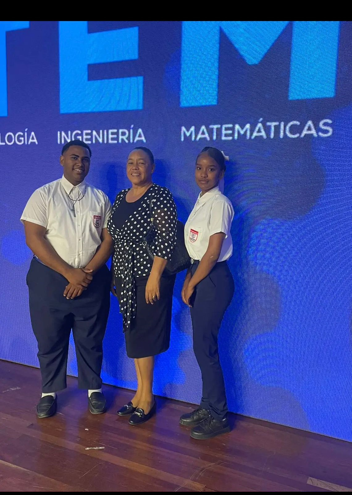
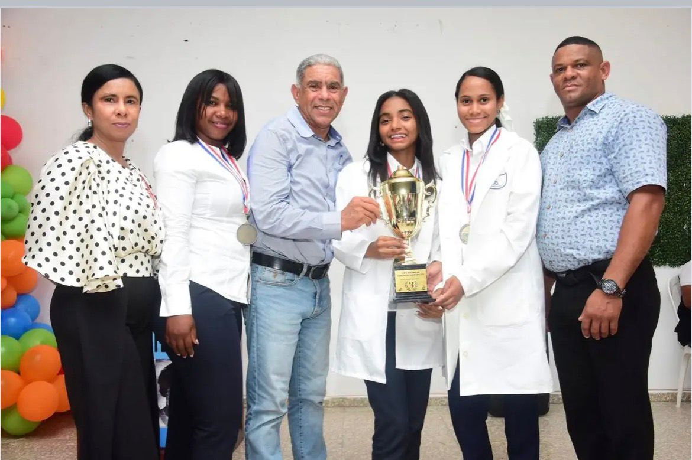

Galería de Actividades
Momentos especiales de nuestra comunidad educativa: eventos, talleres, robótica, graduaciones y más.
Indotel - Premio a Nuestros Estudiantes Destacados
Reconocimiento otorgado por INDOTEL

Elizabeth Paredes y Darlin Portolatin
El Politécnico Agustín Bonilla celebra con orgullo que los estudiantes Elizabeth María Paredes Mejía (actualmente en 6to grado) y Darlin Portolatin Valdez (actualmente en 5to grado), del bachillerato en Desarrollo de Aplicaciones Informáticas, tras haber participado en el concurso nacional de Ciencia, Tecnología, Ingeniería y Matemáticas (STEM), fueron reconocidos con el Premio otorgado por INDOTEL. Este reconocimiento forma parte del Premio INDOTEL al Mérito Estudiantil en Disciplinas STEM, una iniciativa impulsada junto al MINERD, el Banco Mundial y Coursera, con el propósito de fomentar el talento joven y prepararlos para los retos del futuro. ¡Felicidades al maestro Francisco Báez (Goris) su valiosa guía y dedicación en este gran logro!
Año 2025Internet Sano
Los estudiantes del Politecnico Agustin Bonilla mostrando sus habilidades impartieron una charla motivacional sobre las buenas practicas y normas a seguir para mantener un internet seguro.
Marcha Estudiantil

¡Felicidades, estudiantes! El Politécnico Agustín Bonilla celebra con orgullo a nuestros estudiantes por obtener el primer lugar en la etapa distrital del concurso La Marcha. ÿ Su esfuerzo, disciplina y talento nos representan con excelencia. ¡Enhorabuena, campeones!
Robótica

Campamento de Robótica Educativa 2024 Politécnico Politecnico Agustin Bonilla

Campamento de Robótica Educativa 2024 Politécnico Politecnico Agustin Bonilla

La robótica educativa es vital para preparar a los estudiantes para el futuro, potenciar habilidades clave y cultivar una mentalidad innovadora. Feria Robótica Educativa 2024. #politecnicoagustinbonilla.

Grupo de robótica Educativa, ganadores en la fase distrital. Feria Robótica Educativa 2025. #politecnicoagustinbonilla.
Ferias

¡Gran orgullo para nuestra comunidad educativa! Queremos felicitar efusivamente a nuestros talentosos estudiantes de Ciencias Naturales por haber obtenido el ¡TERCER LUGAR! en la Feria Regional de Ciencias, celebrada en San Francisco de Macorís, Distrito Educativo 07-03. Su dedicación, esfuerzo y pasión por la ciencia han sido ejemplares. Este logro es un reflejo de su arduo trabajo y del compromiso de nuestros docentes.

Asi se vio nuestra planada en la actividad expo-bonilla inovación y talento, donde se dieron a conocer los talentos que nuestros estudiantes poseen.
Celebración del Número pi

Celebración del Día del Pi en el Politécnico Agustín Bonilla. Hoy se realizó en el Politécnico Agustín Bonilla una actividad educativa en conmemoración del 14 de marzo, Día del Número Pi, destacando la importancia de las matemáticas en la ciencia y la tecnología. Durante la jornada, los estudiantes participaron en dinámicas y actividades que fomentaron el pensamiento lógico y el interés por el aprendizaje matemático. Felicitamos a todos los estudiantes y docentes que hicieron posible esta significativa actividad.

Nuestros maestros del area de Matemáticas
Graduación - Promoción JAMS 2023-2024


Promoción JAMS 2023-2024. Celebración de graduación de nuestros estudiantes técnicos, felicitamos a todos nuestros graduados.
¿Quieres más detalles de estas actividades?
Visita nuestro Facebook oficial y mantente al día con todas las noticias, eventos y actividades del Politécnico Agustín Bonilla.
Ir al Facebook del Liceo